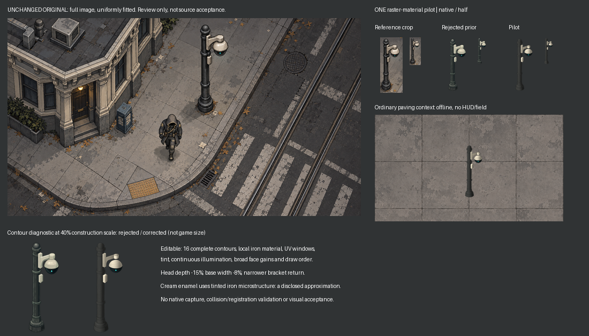
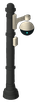
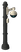
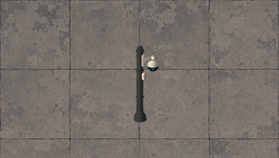
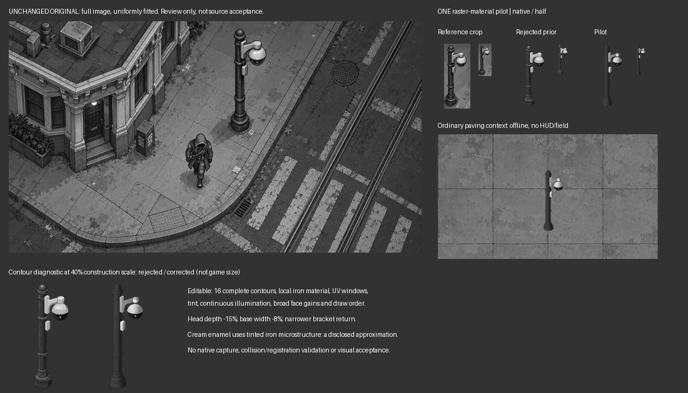

Review only. NOT RECOMMENDED for acceptance or integration. First and only visual attempt. Coordinator inspection required before another sample.
Pole and rings are too dark; material variation is weak at native scale. Technical replay does not establish visual fidelity. Offline paving context is not a native or whole-scene capture.





Method, limitations and actual tests · Editable geometry / UV / shading master · Input provenance · 11-test raw log · Export hashes
Generated iron actual 1254 × 1254 RGB. Original source pixels preserved. All 16 component contours, UV assignments, face gains and shading remain editable in JSON. No benchmark cutout forms the master.